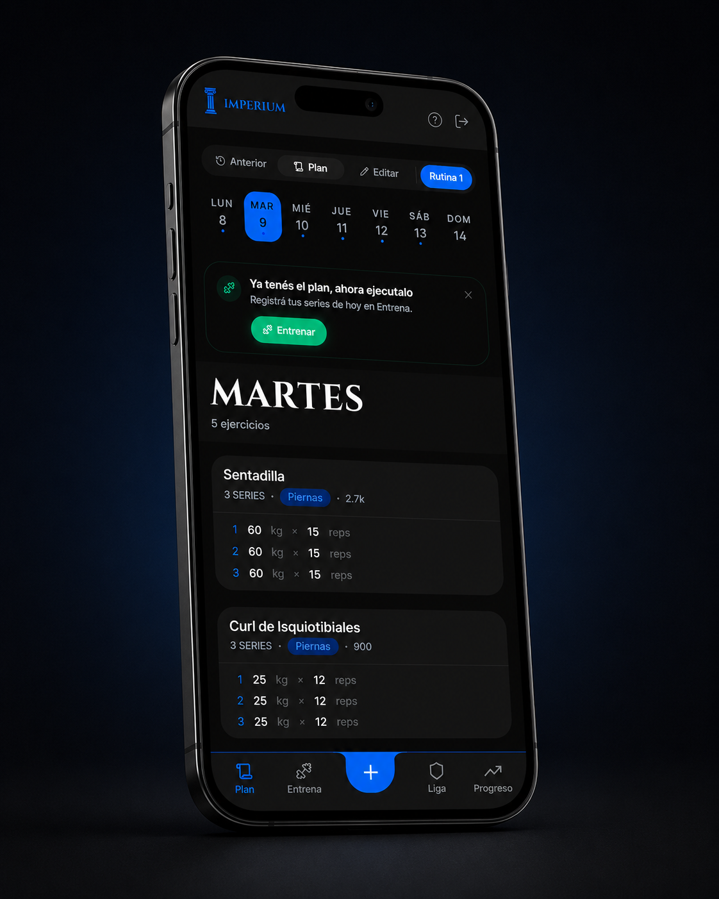

PORTFOLIO
PLATE 01 / SELF

Jose DelValle R-01 Full Stack Developer
Deslizá
↓ 002
Construyo productos digitales de principio a fin, combinando desarrollo frontend, diseño de interfaces y criterio de producto. Me interesa entender el problema antes de construir la solución y encontrar el equilibrio entre una buena experiencia de usuario y una implementación sólida.
Actualmente disponible para
— Frontend Development · React, JavaScript, Tailwind.
— Full Stack Products · Node.js, Express, MongoDB.
— Product & UI/UX · diseño, desarrollo y evolución de interfaces.
De una idea de producto a una aplicación full stack en producción.

Imperium es una aplicación de seguimiento de entrenamiento diseñada para ayudar a las personas a construir constancia, entender su progreso y mantenerse motivadas a lo largo del tiempo.
La desarrollé de principio a fin: desde la definición de la experiencia y el diseño de la interfaz hasta la arquitectura frontend, la API, la base de datos y el deployment.
Diseñé Imperium alrededor de la idea de convertir el progreso y la constancia en una experiencia más motivadora. El usuario puede registrar sus rutinas y sesiones, seguir sus récords personales, visualizar su evolución y construir rachas semanales.
La experiencia está construida alrededor de una temática inspirada en el Imperio Romano, donde los entrenamientos se representan como batallas y la progresión del usuario se convierte en un sistema de puntos, niveles y rangos. Las rachas, récords personales y ligas forman parte de esta misma lógica de gamificación, buscando transformar la constancia en una progresión visible dentro del producto.
Mi formación en diseño gráfico influye directamente en cómo abordo el desarrollo frontend. En Imperium trabajé la jerarquía visual, los flujos de usuario, el sistema de componentes y la representación de información para que los datos de entrenamiento fueran fáciles de interpretar.
El objetivo fue que cada elemento visual tuviera una función dentro de la experiencia, no solamente una función estética.
Construí el frontend con React y Tailwind CSS, desarrollando componentes reutilizables, manejo de estado, autenticación y diferentes flujos de usuario.
El backend está construido con Node.js y Express y expone una API REST para gestionar la comunicación con el frontend y la persistencia de datos en MongoDB, incluyendo usuarios, rutinas, sesiones y progreso.
La arquitectura separa la interfaz, la lógica de negocio y la persistencia de datos, permitiendo que cada parte del sistema tenga responsabilidades específicas y pueda evolucionar de forma independiente.
Uno de los problemas que encontré durante el desarrollo apareció al manejar sesiones de entrenamiento en progreso.
Inicialmente, parte de la información de una sesión activa dependía del estado del cliente. Esto significaba que si el usuario abandonaba la sesión durante demasiado tiempo o perdía la conexión, podía perder el progreso que todavía no había terminado de registrar.
La solución fue incorporar persistencia parcial de la sesión, almacenando periódicamente el progreso en MongoDB para poder recuperarlo posteriormente.
Este problema me llevó a replantear el flujo más allá del caso ideal y diseñar la experiencia teniendo en cuenta situaciones reales de uso.
El proyecto comenzó como una forma de aplicar lo que estaba aprendiendo y terminó convirtiéndose en una aplicación full stack funcional, desplegada y abierta a usuarios.
Más que construir una colección de features, el objetivo fue recorrer el ciclo completo de desarrollo de un producto: entender el problema, diseñar la experiencia, tomar decisiones técnicas, construir, desplegar, detectar problemas y continuar iterando.

Tengo 24 años. Estudié diseño gráfico y después hice la transición al desarrollo frontend, creciendo desde ahí hacia proyectos full stack. En el camino trabajé como diseñador y editor de video; esa experiencia sigue formando parte de cómo pienso y construyo productos digitales.
Hoy construyo aplicaciones web completas: del componente al endpoint, de la base de datos a la experiencia final. Me interesa entender cómo funciona un producto tanto por dentro como por fuera: desde la arquitectura y la lógica hasta la interfaz, las interacciones y los detalles que hacen que una experiencia se sienta bien.